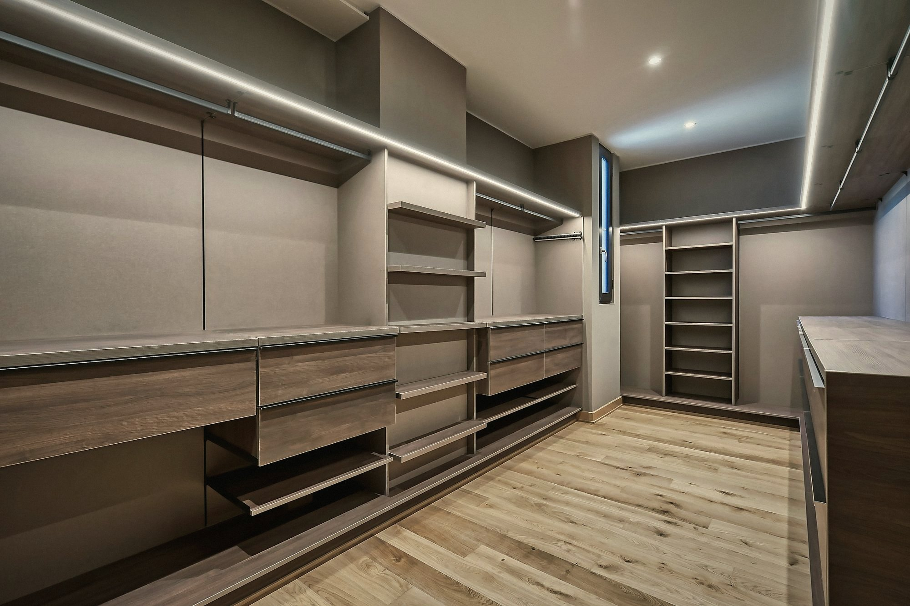
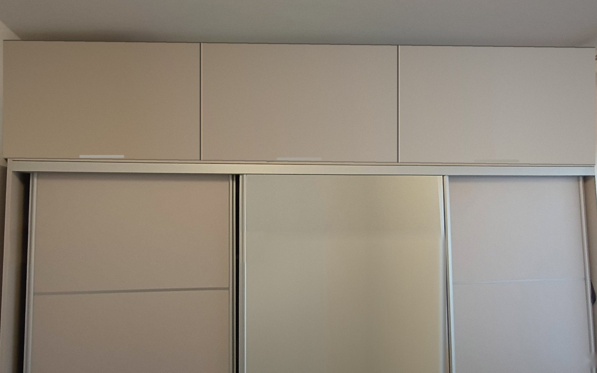
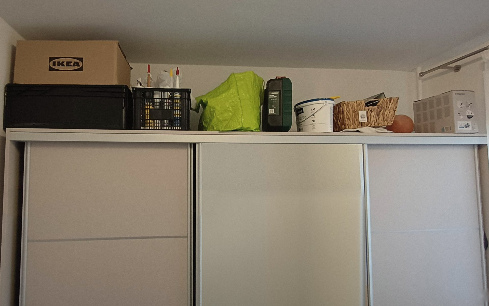
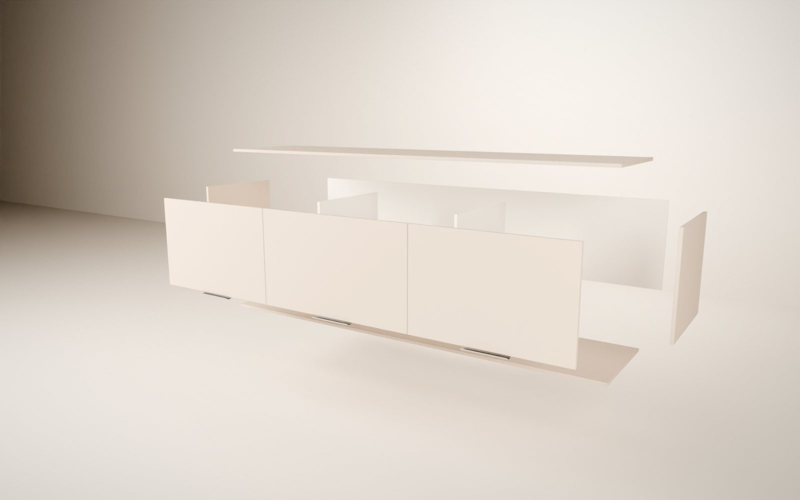
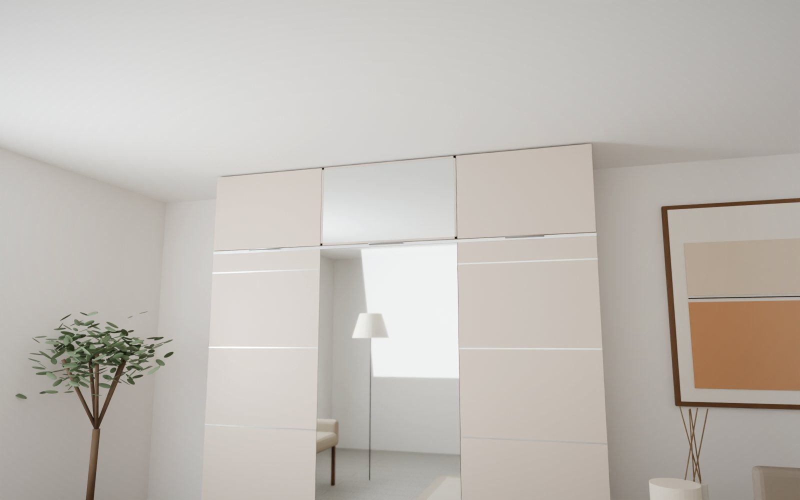
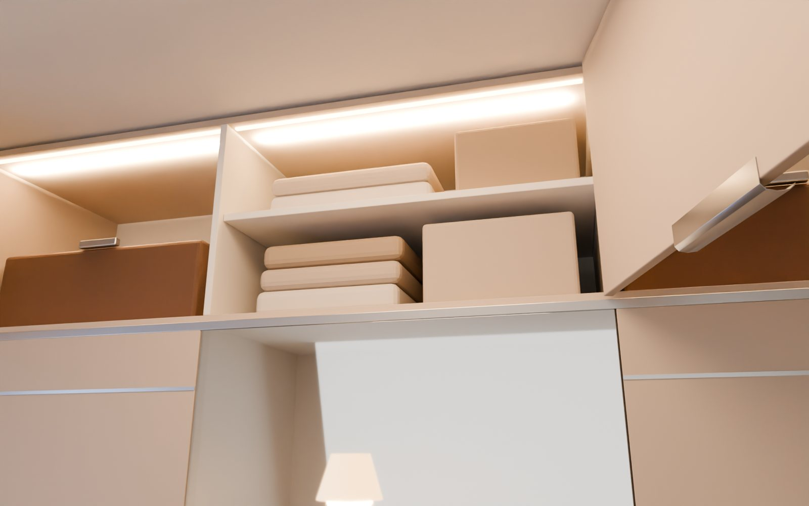
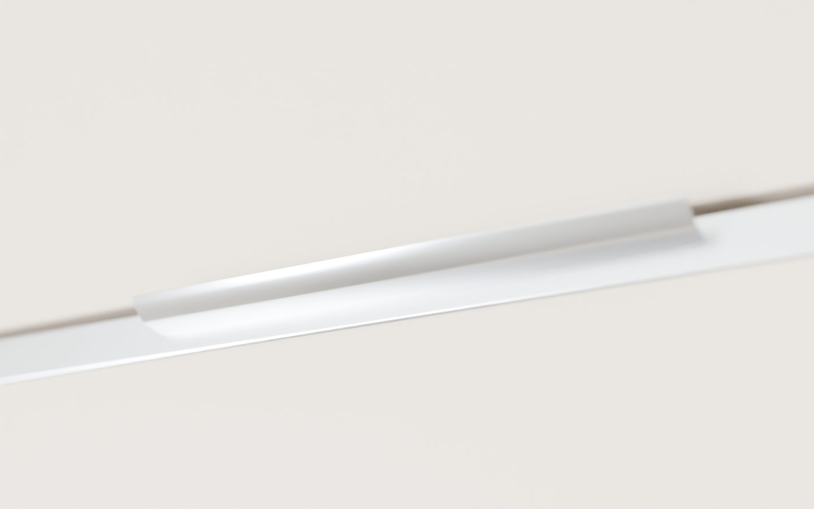
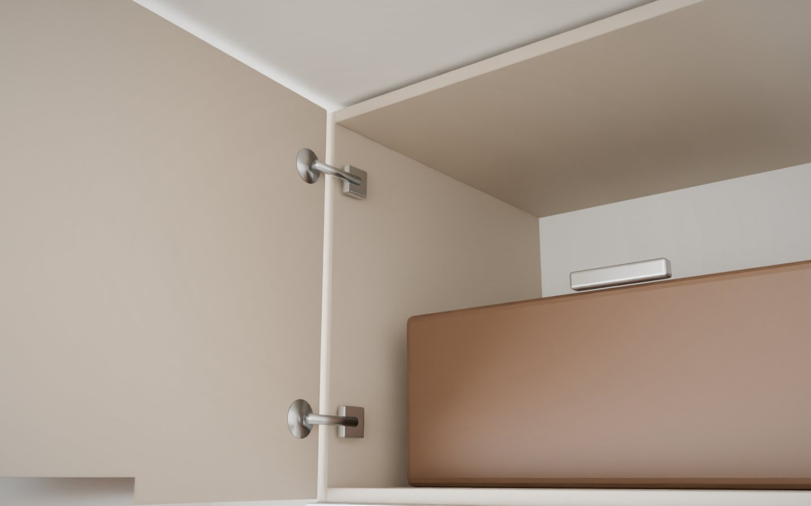
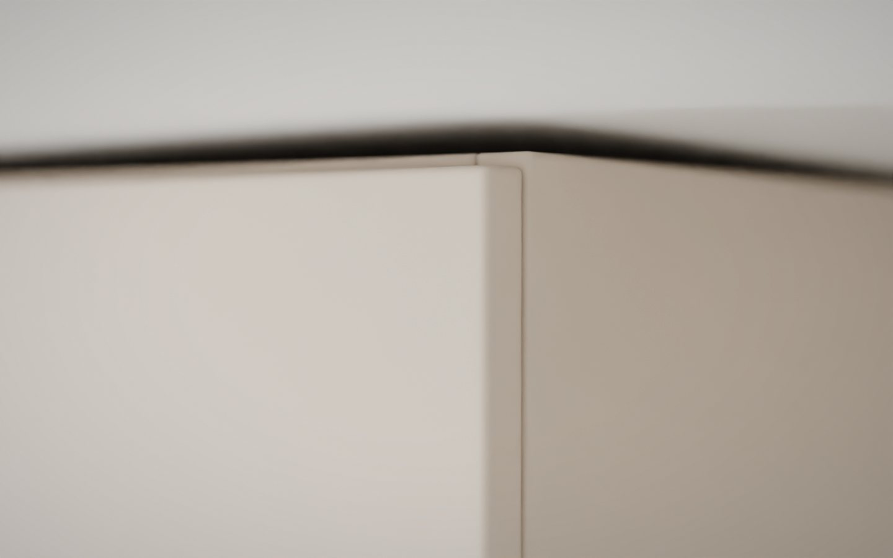
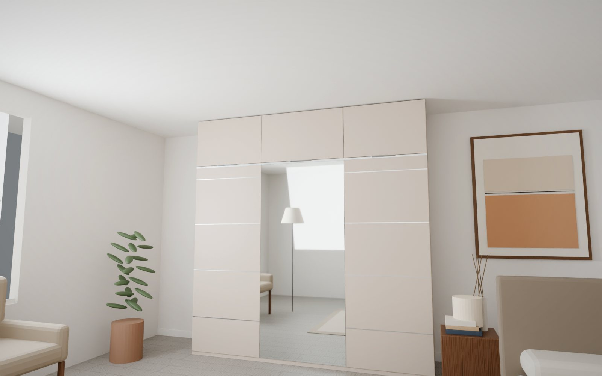

A hiányzó fél méter, megoldva.
Egy korpusz, egybefüggő tető, csendes ajtók. Méretre tervezve a meglévő szekrényedhez – a plafonig.
Ami eddig por volt, most tér.
A legtöbb gardrób fölött 50–60 cm üres sáv marad. A ZENIT ezt tölti ki – 10 mm-re a plafontól.
- Ma
- A ZENIT
- 10 mm
Ugyanaz a szoba. Más nyugalom.
A mi hálószobánk, valódi fotón. Húzd a csúszkát: a dobozok, ládák és a por helyén egyetlen, csendes felület – a plafonig.


Valódi fotó a referencia-szekrényről; az „utána” kép fotómontázs a ZENIT méretpontos modelljéből.
Kinyitod, és fény gyúl.
Fékes pántok, melegfehér LED minden rekeszben – és hely mindannak, ami eddig a szekrény tetején porosodott. Valós idejű 3D-felvétel a tervezőből.

Látványterv · robbantott nézetEgy bútor. Harminc gondos részlet.
- 01Egy korpusz, egybefüggő tetővel. Nincsenek toldások, nincs látható illesztés – a vonal egyetlen mozdulat.
- 02Tipli és konfirmát kötés. Ragasztó nélkül szilárd, évtizedekre – és bármikor szétszedhető.
- 03Häfele Metalla 300SM pántok. 110°-os nyitás, felül fékes, alul rugós; háromdimenziósan állítható.
- 042 mm-es, lekerekített ajtóél. Kopásálló ABS, kézbe simuló – az ajtó minden érintésnél ugyanolyan.
- 05GTV HEXA élfogantyú, 192 mm. Lekerekített, eloxált alumínium; hátulról csavarozva, a fronton nincs csavarfej.
- 06Polc három csapon oldalanként. Nem billeg, nem hajlik; a szélső rekeszekbe később is bővíthető.
- 07Szegezett HDF hátfal. Merevít, zár, és kívülről sosem látszik.
A te döntéseid. A mi pontosságunk.
Minden opció a tervezőben, élőben kipróbálható – és pontosan úgy készül el, ahogy látod.

Látványterv
Látványterv
Látványterv
Látványterv
LátványtervHa a ház nem tökéletes, a ZENIT az.
A régi lakások plafonja ritkán vízszintes, a falak ritkán egyenesek. A tervezőben megadhatod a bal és jobb oldali plafonmagasság közti különbséget és a fal felé szükséges kiegyenlítést – mindkettőt 10 cm-ig.
A korpusz mindig vízszintes és derékszögű marad; az eltérést egyedire szabott, a szekrénnyel azonos színű takaróléc és rejtett távtartó veszi fel. Kívülről csak annyi látszik, hogy a ZENIT pontosan odaér.
Méretre szabva, nem méretre vágva.
- Szélesség
- 60 – 280 cm
- Ajtók
- 1 – 6, ajtónként max. 90 cm, nyitásiránnyal
- Magasság
- a plafonodhoz, −10 mm
- Mélység
- 30 – 70 cm (javasolt: az alsó szekrényé)
- Kiegyenlítés
- plafon és fal, 0 – 10 cm
- Pántok
- Häfele Metalla 300SM, 110°
- Fogantyú
- GTV HEXA 192, lekerekített
- Rögzítés
- a szekrényhez, falfúrás nélkül
- Elkészülés
- 3 – 4 hét
Bútorline ELIA 250 fölé, kasmírban.
A bemutatott ZENIT egy valódi szekrényre készült: 250 × 205 × 60 cm, belmagasság a legalacsonyabb ponton 259 cm.

Minden a helyén. A legfelső polc is.
Ha a tárolás a plafonig ér, a szoba többi része felszabadul. Ez a ZENIT lényege.